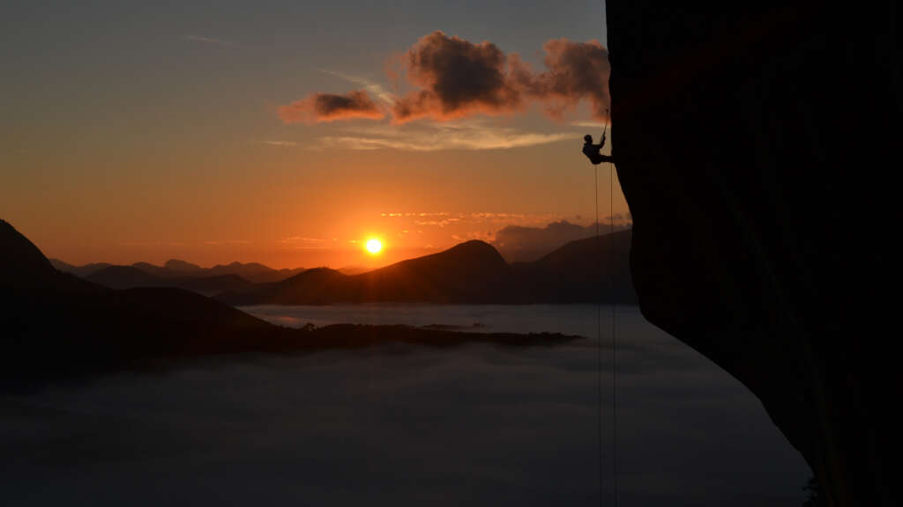

Nossos Parques

Parque Nacional da Serra dos Órgãos
O principal destino para montanhismo e trilhas na região.
Saiba Mais
Parque Estadual dos Três Picos
O maior parque estadual do Rio de Janeiro, rico em fauna e flora.
Saiba Mais

Parque Natural Montanhas de Teresópolis
Unidade de conservação municipal com trilhas e vistas incríveis.
Saiba MaisÚltimas Atualizações
- 19/10/2025 Trilha da Pedra do Sino reaberta após manutenção.
- 18/10/2025 Temporada de montanha oficialmente encerrada.
- 17/10/2025 Novo evento de observação de aves no PARNASO.